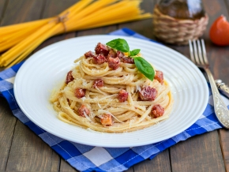

Паста Карбонара со сливками и беконом
Паста карбонара — спагетти с мелкими кусочками бекона, смешанные с соусом из яиц, сыра пармезан и пекорино романо, соли и свежемолотого чёрного перца. Этот соус доходит до полной готовности от тепла только что сваренной пасты. Блюдо было изобретено в середине XX века
Ингредиенты
- 250 г. спагетти
- 100 г. бекон
- 4 шт. желтки
- 100 мл. сливки
- 50 г тертый пармезан
- 1 зубчик чеснока
- 2 веточки петрушки
- соль – по вкусу
- свежемолотый перец – по вкусу
Инструкции
- Бекон нарезать тонкой соломкой, чеснок очистить и мелко порубить, зелень вымыть, обсушить и мелко порубить.
- В глубокой сковороде или сотейнике обжарить, на среднем огне, бекон, около 2 минут, обавить чеснок и обжарить еще 2 минуты.
- Положить петрушку, немного поперчить свежемолотым перцем, перемешать и снять сотейник с огня.
- В миске соединить: яичные желтки, сливки, тертый пармезан, соль и перец. Хорошо перемешать сливочный соус.
- Спагетти отварить в большом количестве кипящей подсоленной во-ды до состояния Al dente (с момента закипания варить на 1 минуту меньше, чем указанно на упаковке).
- Откинуть спагетти на дуршлаг, соединить с обжаренным беконом и перемешать.
- Добавить к спагетти сливочный соус и быстро перемешать пасту с соусом (от жара пасты, желтки в соусе дойдут до готовности).
- Снять сотейник с пастой с огня и сразу подавать к столу.
- При подаче посыпать спагетти карбонара зеленью петрушки и тертым пармезаном.
Вернуться на главную страницу